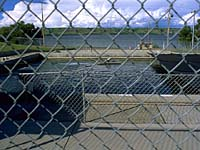
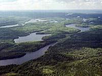
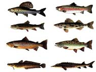

An Introduction to Saskatchewan Fisheries

Saskatchewan's fisheries resource makes a major contribution
to the province's economy. More than 230,000 anglers fish in Saskatchewan
annually. Fish hatcheries, stocking programs and a processing
plant are present in the province. Over 3400 jobs are directly
related to the commercial and sport fishing industry. Each year, approximately 11 million fish are caught be anglers and 5 million are kept. This renewable resource continues to support revenue
and recreation in the province with careful management practices.
 Saskatchewan a great place to fish. Take a look at the topography of the province.
Water accounts for about one-eighth of the area in Saskatchewan.
There are thousands of lakes, rivers, streams, creeks, ponds, swamps and reservoirs
throughout the entire province, all habitats to various fish populations.
Saskatchewan a great place to fish. Take a look at the topography of the province.
Water accounts for about one-eighth of the area in Saskatchewan.
There are thousands of lakes, rivers, streams, creeks, ponds, swamps and reservoirs
throughout the entire province, all habitats to various fish populations.
For the purposes of management of the
fishing resource, the Province is divided into three zones. The most obvious effect of this arrangement
is on the opening date of the fishing season. In the southern zone, fishing season usually
begins in the first week of May but is delayed two to three weeks in the northern zone. For the 1999-2000 season,
season dates are: May 8 to March 31 (southern), May 15-March 31 (Central), May 25-March 31 (northern). Look to your
Saskatchewan Angler's guide for specific dates for certain waters.

The majority of great fish habitat lies in the thinly populated northern half of the province, where most lakes are deep, clear, cold and numerous.
The only way to access some of these great fishing lakes is by float plane. Charter operators will fly you into one of the many specialized fishing camps for the experience of a lifetime. Check with your travel agent for details!
Types of Fish in Saskatchewan

Types of fish present in the lakes of the Shield are
arctic grayling,
brook trout,
brown trout,
burbot,
lake sturgeon,
lake trout,
lake whitefish,
northern pike,
rainbow trout,
sauger,
splake,
walleye,
suckers and
yellow perch. The five major lakes in northern Saskatchewan include Reindeer, Wollaston, Cree, La Ronge and Athabasca where commercial and sport fishing is present.
Sport fishermen can enjoy any one of the province's camps/lodges which boast excellent fishing in Saskatchewan's north.
Lakes in Saskatchewan